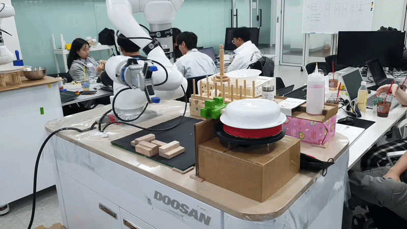
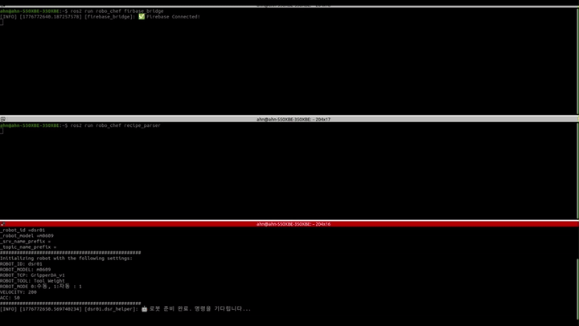

기술 스택
Hardware

Doosan m0609
6-DOF 협동로봇
OnRobot RG2
전동 그리퍼

DualSense
PS5 컨트롤러
Robot / ROS 2

ROS 2 Humble
로봇 미들웨어

Python 3.10
ament_python 패키지

NumPy / SciPy
궤적 스무딩
Cloud / Backend

Firebase RTDB
실시간 데이터베이스

Flask
REST API 백엔드

Cloudflare Tunnel
원격 접속
Dev Tools

Ubuntu 22.04
메인 / 서브 PC

Git / GitHub
형상 관리

PyQt5
녹화 GUI
RoboChef
04 / 20
동작 녹화 — ros2_move_recoder
충돌 감지

범위 제한

녹화 파이프라인
조이스틱 조작 → joint_states 수집 → raw.json → Savitzky-Golay 스무딩 → smooth.json

특이점 회피
smooth.json 구조
{
"waypoints_deg": [[J1..J6], ...],
"vel": 30.0,
"acc": 60.0,
"gripper_events": [{"t_norm": 0.0, "width_mm": 110}]
}
~/cobot_ws/src/ros2_move_recoder/records/<seg>/smooth.json
RoboChef
09 / 20
관리자 모니터
실시간 모니터링
J
조인트 포지션
J1~J6 실시간 각도 (deg)
T
TCP 위치
FK 계산 X/Y/Z/Rx/Ry/Rz (mm, deg)
L
시스템 로그
/logs + /dsr_log ROS 로그 집계
C
원격 제어
/commands/robot: pause · resume · stop
Firebase RTDB 경로
| 경로 | 내용 | 주기 |
|---|---|---|
| /robot_state | joint + TCP + 모드 | 2 Hz |
| /robot_status | 조리 세그먼트 진행 | 이벤트 |
| /telemetry | raw 5Hz 스냅샷 | 5 Hz |
| /logs | Flask app 로그 | 이벤트 |
| /dsr_log | /rosout 집계 | 이벤트 |
| /commands/robot | pause/resume/stop | 쓰기 |
RoboChef
13 / 20
통신 흐름 — 주문 경로
키오스크 주문
sub1_side

Kiosk → POST /api/orders → Firebase /orders 생성
Main PC 수신
main_side

firebase_bridge 감지 → /recipe 발행 → sequence_runner 시작
RoboChef
14 / 20
통신 흐름 — 조리 상황
실제 조리 동작
m0609

sequence_runner → play_segment() → amovesj 재생
고객 화면 업데이트
customer_status

/cooking_status → Firebase /robot_status → 화면 실시간 반영
RoboChef
15 / 20
안전 감지 테스트
충돌 감지

충돌 이벤트 감지 시 즉각 모션 중단 확인
비상 정지

관리자 정지 명령 → /dsr01/motion/move_stop → ERROR 상태 전이
RoboChef
18 / 20